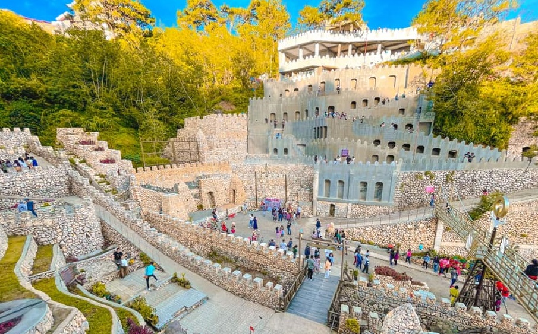

Igorot Stone Kingdom is a unique tourist attraction in Baguio known for its impressive stone structures inspired by Igorot culture. It features towering walls and creative rock formations that showcase local heritage and craftsmanship. Visitors often explore the area, take photos, and learn more about the rich traditions of the Igorot people. It is also a great place to enjoy scenic views of the surrounding mountains.